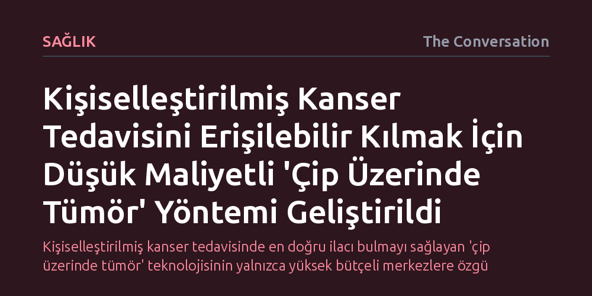

SAGLIK · The Conversation · 2026-09-09
Araştırmacılar, kişiselleştirilmiş kanser tedavisi denemelerini kolaylaştıran 'çip üzerinde tümör' cihazlarını düşük maliyetle üretmenin pratik bir yolunu geliştirdi. Erişilebilir malzemelerle üretilen bu mikroakışkan sistem, özellikle çocukluk çağı beyin tümörlerine yönelik tedavilerin laboratuvarda güvenle test edilmesini sağlıyor.
Kişiselleştirilmiş kanser tedavisinde en doğru ilacı bulmayı sağlayan 'çip üzerinde tümör' teknolojisinin yalnızca yüksek bütçeli merkezlere özgü olmadığını, düşük maliyetle her klinikte uygulanabilir hale gelebileceğini gösteriyor.

Kanser, aynı organda ortaya çıksa dahi iki farklı insanda tamamen farklı genetik mutasyonlarla ilerleyen benzersiz bir biyolojik süreçtir. Bu nedenle aynı tanıya sahip iki hastadan birinde hayat kurtaran bir tedavi, diğerinde hiçbir yanıt vermeyebilir. Onkolojideki en temel zorluk, hastaya en uygun ilacı yan etkilere yol açmadan ve zaman kaybetmeden belirleyebilmektir.
Geleneksel laboratuvar testlerinde kanser hücreleri genellikle düz plastik petri kaplarında iki boyutlu olarak çoğaltılır. Oysa insan vücudundaki bir tümör, sadece kanserli hücrelerden ibaret değildir; çevresindeki damarlar, bağ dokusu ve sağlıklı hücrelerle sürekli iletişim halindedir. Laboratuvardaki ilkel kültürlerin bu karmaşık vücut ortamını yansıtamaması, laboratuvarda başarılı görünen pek çok tedavinin hastada başarısız olmasına yol açmaktadır.
Bu engeli aşmak için geliştirilen 'çip üzerinde tümör' teknolojisi, hastanın tümör biyolojisini avuç içine sığacak boyuttaki cihazlarda yeniden inşa etmeyi mümkün kılar. Bu biyomedikal çipler, saç teli inceliğinde mikroakışkan kanallar barındırır. Bu kanallardan besin zengini sıvılar pompalanarak, kan dolaşımının dokulara besin taşıma mekanizması birebir taklit edilir.
Hastadan alınan tümör hücreleri, çevrelerindeki kanserli olmayan doku bileşenleriyle birlikte bu akışkan kanallarda üç boyutlu olarak büyütülür. Böylece hekimler, hastayı gereksiz ilaç yüküne maruz bırakmadan farklı kişiselleştirilmiş tedavi seçeneklerini doğrudan bu çip üzerinde deneyebilir. Ancak mikroakışkan çiplerin üretimi şimdiye dek son derece zahmetli, pahalı ve özel tesisler gerektiren bir süreçti.
Araştırmacılar, söz konusu cihazların üretimini zorlaştıran yüksek maliyet ve uzmanlık bariyerini yıkmak üzere yeni bir yöntem geliştirdi. Pahalı temiz oda donanımları ve özel kimyasallar yerine, kolay erişilebilen malzemelerle dar mikro kanallara sahip çipler imal etmeyi başardılar.
Elde edilen sonuçlar, düşük maliyetli bu yeni çiplerin de insan dokusunun işlevsel karmaşıklığını başarıyla yaşatabildiğini ortaya koydu. Bu çalışmanın asıl önemi, teknolojiyi sadece ucuzlatmasında değil; pahalı merkezlerin tekelinden çıkararak geniş kitlelerin ve kliniklerin kullanımına sunabilecek bir 'demokratikleşme' adımı atmasında yatıyor.
Yeni yöntemin ilk uygulama alanlarından biri çocukluk çağı beyin kanserleri oldu. Beyin tümörleri büyürken çevreye 'hücre dışı veziküller' adı verilen mikroskobik parçacıklar salar ve bu parçacıklar kanserin evrimine dair kritik bilgiler taşır. Çocuklarda beyin dokusundan cerrahi yolla tekrarlayan biyopsiler almak son derece riskli ve ağrılı olduğundan, bu sürecin çip üzerinde taklit edilmesi tedaviyi dönüştürme potansiyeli taşır.
Araştırmacılar, hastanın tümörünü vücut dışında yaşatarak bu salgılanan parçacıkları risksizce izleyebiliyor ve kanserin ilaca direncini zaman içinde haritalandırabiliyor. Yine de çip teknolojisinin insan vücudunun tamamının yerini tutamayacağını ve klinik deneyleri tamamen ortadan kaldırmayacağını unutmamak gerekir; ancak kişiye özel doğru tedaviyi seçmede hekimlerin elini büyük ölçüde güçlendiriyor.